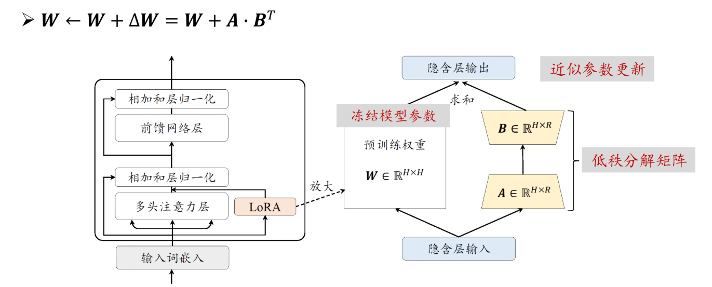
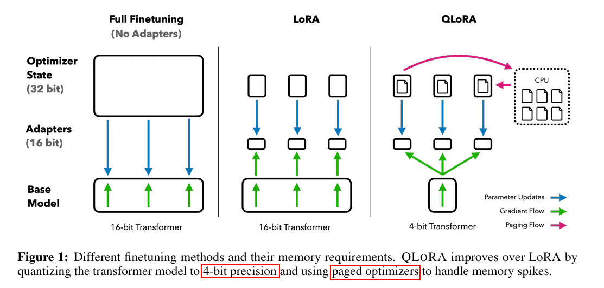

llm微调调研
大模型训练与微调
大语言模型（LLM）的成长过程，大体可以分为三个阶段：
| 阶段 | 目标 | 学习方式 | 类比 |
|---|---|---|---|
| 预训练（Pretraining） | 学习语言规律和知识 | 自监督学习 | 小孩学习基础语法 |
| 监督微调（SFT） | 学会听懂“人类指令” | 人类示范样本 | 老师手把手教你回答问题 |
| 对齐训练（RLHF / DPO） | 学会“说得合适” | 人类偏好反馈 | 学会在社交中说话得体 |
🧩 简单来理解：
预训练让模型“有知识”；
微调让模型“能沟通”；
对齐让模型“合人意”。
一、预训练
1.1 什么是预训练？
1.1.1 背景与概念
在大语言模型（LLM, Large Language Model）中，预训练（Pre-training） 是整个模型训练流程的第一阶段，也是最关键的一步。它的目标是让模型在大规模、无标注的文本数据上，通过自监督学习（Self-supervised Learning）的方式，掌握语言的基础规律和世界常识。
这些数据通常来源于互联网网页、新闻、百科、书籍、社交媒体文本、论文等，从而使模型具备理解自然语言、生成自然语言的通用能力。
1.1.2 类比理解
可以把预训练后的模型比作刚刚毕业的大学生——他们已经通过大学阶段的“通识教育”，掌握了丰富的理论知识与基本技能，具备了在社会中工作的基础能力。但要真正胜任某个具体岗位（比如程序员、医生、律师），还需要进行“上岗培训”和“岗位实战”，也就是模型在预训练之后所需要的微调（Fine-tuning）和对齐（Alignment）阶段。
换句话说，预训练是让模型“学会语言”，而微调和对齐则是让它“懂人话”、“会办事”。
1.1.3 核心目标
通过预训练，模型能够在以下方面获得能力：
- 语言规律：掌握语法、句法结构、上下文逻辑；
- 语义理解：理解词语和句子的深层含义；
- 常识与世界知识：学习人类社会中普遍的事实和推理规律；
- 泛化能力：具备迁移到新任务、新领域的能力。
1.2 为什么需要预训练？
1.2.1 现实需求
在现实场景中，很多任务都缺乏足够的标注数据。如果直接让模型从零开始在这些任务上学习，不仅效率低，而且容易过拟合。 预训练的目的就是让模型先通过大规模通用语料“自学成才”，积累通用的语言知识，再通过少量下游任务的微调，快速适应特定应用场景。
预训练是给模型“铺语言地基”，它需要先掌握语言的基本规律，同时也只有先具备“理解、生成人类语言”的通用能力，后续针对具体任务的调优才有意义。没有预训练，模型就没有“语言知识储备”，后续再教特定任务也学不会。
1.3 怎么实现预训练？
1.3.1 数据
在预训练阶段，数据是模型能力的根基。训练大语言模型的第一步是收集海量且高质量的文本数据，目标是构建一个多样化、覆盖面广、内容可信的数据集，使模型能够学习丰富的语言知识与上下文关系。
（1）数据来源与规模
数据通常包括：
- 网页内容（维基百科、新闻网站、论坛）
- 书籍与论文（电子书、学术出版物）
- 社交媒体文本（微博、Reddit、Twitter等）
- 高质量对话与问答数据（如StackExchange、Quora）
目前主流大语言模型的预训练语料量级通常达到 万亿级词元（Token），例如 GPT-3 训练使用了约 5000 亿 Token，开源模型 LLaMA-2 使用约 2 万亿 Token。
（2）数据清洗与处理流程
收集的数据需经过严格的清洗与规范化流程：
- 去除重复、无意义、低质量文本；
- 过滤色情、暴力、歧视、虚假信息等有害内容；
- 标准化文本格式，去除HTML标记、异常符号；
- 使用分词器（Tokenizer）将文本转换为词元序列；
- 将词元划分为批（Batch）输入模型训练。
由于模型的语言理解与生成能力高度依赖数据质量，因此“高质量、多样性、干净”的语料是决定模型性能的关键因素。
1.3.2 算法
（1）核心架构：Transformer
当前大语言模型的预训练几乎全部基于 Transformer 架构。其核心思想是自注意力机制（Self-Attention），它能让模型在处理文本序列时，动态捕捉词语之间的全局依赖关系。例如在句子“猫追着它跑”中，模型可通过注意力机制判断“它”指代“猫”，而非仅依赖局部上下文。与传统的 RNN 或 CNN 结构相比，Transformer 具有：
- 全局建模能力强：能同时关注句中任意两个词的关系；
- 并行计算高效：摆脱了序列依赖瓶颈，适合GPU/TPU加速；
- 可扩展性好：层数与参数规模可线性扩展至数千亿级别。
因此，Transformer 成为现代 LLM 的通用架构底座。
（2）训练范式与任务设计
在确定架构后，需要为模型设计合适的预训练目标任务。前主流的大模型预训练范式主要包括三类：
1️⃣ Encoder-only 模型（代表：BERT）
- 核心任务：掩码语言建模（Masked Language Modeling, MLM）
模型会随机遮盖句子中部分词语（如“猫在[MASK]上睡觉”），要求根据上下文预测被遮盖的词（“床”）。
这种双向上下文建模让模型更好地理解语义和语法结构。 - 适用场景： 文本分类、情感分析、命名实体识别、信息抽取等理解类任务。
- 技术特征：
- 强调语言理解，不具备生成能力；
- 模型结构仅包含 Transformer Encoder；
- 训练目标侧重语义表示学习。
2️⃣ Decoder-only 模型（代表：GPT 系列、LLaMA、Baichuan）
- 核心任务：自回归语言建模（Autoregressive Language Modeling, LM）
模型按从左到右的顺序预测下一个词，比如输入“今天我去”，预测“上学”“旅游”等最可能的下一个词。
通过这种方式，模型学习语言生成的连贯性与逻辑性。 - 适用场景： 文本生成、对话系统、代码补全、写作辅助等。
- 技术特征：
- 仅包含 Transformer Decoder；
- 强调生成能力，但理解能力相对较弱；
- 支持长文本生成与上下文建模。
3️⃣ Encoder-Decoder 模型（代表：T5、BART、mT5）
- 核心任务：序列到序列学习（Seq2Seq）
将输入序列（如英文句子）编码为语义表示，再解码生成目标序列（如中文翻译）。
通常结合掩码重建、去噪自动编码等任务训练。 - 适用场景： 机器翻译、摘要生成、问答、文本改写等“输入—输出”类任务。
- 技术特征：
- 同时具备理解与生成能力；
- 模型结构包含 Transformer Encoder 与 Decoder 两部分；
- 训练任务设计灵活，可统一多种NLP任务形式。
🌟 小结
| 模型类型 | 核心任务 | 优势 | 代表模型 |
|---|---|---|---|
| Encoder-only | 掩码语言建模（MLM） | 强理解能力 | BERT、RoBERTa |
| Decoder-only | 自回归语言建模（LM） | 强生成能力 | GPT、LLaMA、Baichuan |
| Encoder-Decoder | 序列到序列（Seq2Seq） | 理解+生成兼备 | T5、BART |
（3）训练优化策略
在预训练中，还需使用一系列优化算法和技巧来确保模型高效收敛：
- 梯度下降（Gradient Descent）：迭代更新模型参数，使预测误差最小化；
- 学习率调度（Learning Rate Scheduling）：采用 warm-up、cosine decay 等策略防止训练初期震荡或后期过拟合；
- 混合精度训练（Mixed Precision）：提升显存利用率和训练速度；
- 分布式并行（Data/Model/Optimizer Parallelism）：实现多GPU或多节点协同训练。
这些技术共同确保了在超大规模参数和数据下的稳定、高效训练。
1.3.3 算力
算力是预训练的“燃料”。由于模型规模与数据量的指数增长，预训练阶段对计算资源的需求极为庞大。
（1）算力的定义与衡量
算力通常由以下维度共同衡量：
- GPU/TPU数量与性能（如A100、H100数量）；
- 显存容量（影响并行批大小与序列长度）；
- 训练时长（通常以 GPU·小时 或 GPU·天 表示）；
- 网络带宽与通信效率（影响多机分布式同步速度）。
（2）算力需求示例
- 训练 百亿参数模型，通常需百卡规模GPU集群（如100×A100 80G），训练时间约需数周至数月；
- 训练 千亿参数模型（如GPT-3级），需千卡甚至万卡规模集群，训练时间可达数月。
算力规模的扩展不仅关乎硬件数量，更依赖于高效的分布式训练框架（如 DeepSpeed、Megatron-LM、Colossal-AI）与集群调度系统的优化。
二、有监督微调（SFT）
2.1 什么是SFT？
自2018 年以来，随着 BERT 和 GPT 等预训练模型的提出，自然语言处理（NLP）的范式从传统的“有监督学习”转向了“自监督预训练 + 有监督微调（Fine-tuning）”的新阶段。 预训练阶段让模型在大规模无标注语料中学习通用语言知识，而微调阶段则通过带标注的数据让模型适应特定任务，以实现对下游任务适配。
SFT（Supervised Fine-Tuning） 指的是在预训练模型的基础上，利用人工标注的任务数据（输入-输出对）进行有监督训练，让模型学会执行明确的指令或任务。例如：
若希望模型回答“如何申请年假”，就需构建大量“问题（指令）→ 标准回答（标注）”的训练样本，让模型学习从指令到回答的映射关系。
通过 SFT，模型从“能理解语言”进一步进化为“能理解意图并执行任务”，是从 通用模型 向 专用模型 转化的关键环节。
2.2 为什么需要SFT？
现有的类似于ChatGPT和文心一言等大模型，对于个人和小型科研团队难以获取和训练。尽管可直接使用的开源的大语言模型（如 LLaMA、Baichuan、GLM 等）已经具备强大的语言理解与生成能力，但距离特定领域应用还有一段距离，需要对其参数做进一步调整, 以提升理解用户语言和遵循用户指令的能力。
因此，在模型投入实际应用前，需要通过 SFT 来进行“第二阶段训练”，将通用语言能力转化为 符合特定领域、特定任务需求的能力。可以认为：
预训练教会模型“语言规律”，而 SFT 教会模型“任务执行”与“人类意图”。
2.2.1 适用性 —— 从“通用”到“专用”
有监督微调的首要目的，是提升模型的适用性。预训练模型掌握的是广义的语言知识和常识，但不同任务往往有独特的语境、格式和术语。例如：
- 医疗领域包含“病历、诊断、药物相互作用”等专业词汇；
- 金融领域需要理解“资产负债率、风险敞口”等概念；
- 法律文本注重条款逻辑和判例推理。
通过在这些领域的高质量标注数据上进行微调，模型能够学习到领域特有的语言表达与逻辑模式，从而提升在该领域任务上的准确性与可靠性。这使得通用大模型转变为面向场景的专用模型（Domain-Specific Model）
2.2.2 数据隐私与安全 —— 从“可用”到“可信”
在实际应用中，通用大模型往往基于公开数据训练，这意味着：
- 模型输出可能无意中包含训练语料片段；
- 在处理敏感领域（医疗、政务、金融）时存在隐私风险；
- 输出内容缺乏安全审查机制。
通过 SFT，可引入企业或机构自有的、符合安全规范的标注数据集进行再训练，从而在模型层面实现内容过滤与合规控制、防止隐私信息泄露。
2.2.3 计算资源与成本 —— 从“庞然大物”到“可落地”
训练一个大模型从零开始成本极高。以 GPT-3（175B 参数）为例，单次预训练成本高达 460 万美元，需要 数千张 GPU 训练数月之久。 然而，大多数下游任务并不需要如此庞大的模型能力。SFT 提供了一种高性价比的解决方案：
- 只需加载现有的预训练模型；
- 在较小规模的特定数据上微调；
- 即可获得定制化能力。
这样既能复用预训练模型的通用知识，又能避免重复投入巨大算力资源。因此，SFT 是中小型团队或企业将 LLM 技术“快速落地”的关键手段。
2.3 怎么实现SFT？
SFT 的核心流程可概括为：
准备高质量指令数据 → 构建微调数据集 → 设计训练任务与参数 → 优化与评估
2.3.1 数据准备
SFT数据集的核心是“指令–响应（instruction–response）对”，通常包含三类信息：
1 | { |
（1）数据来源
- 人工标注：人工编写或校验问答对，质量最高，常用于关键领域（如政务、医疗）。
- 众包或专家数据：利用专业知识构建行业任务集。
- 生成式合成：用已有大模型（如GPT-4）生成初始问答数据，再经人工筛选修正。
- 开源数据集：如 Alpaca、Dolly等。
（2）数据清洗与筛选
- 去除重复、低质量或含有错误标签的数据；
- 过滤无关、敏感、低多样性的样本；
- 控制“指令类型”平衡：问答、摘要、翻译、分类、推理等；
- 对输出进行标准化（如去除口语化、统一格式）。
（3）数据规模
小型SFT通常需数万到数十万条数据；大模型（如ChatGLM3、LLaMA3）使用的数据规模往往超过百万条样本级别。
2.3.2 指令形式与格式设计
SFT的关键是“指令模板化（Instruction Templating）”。即在输入中明确区分系统角色、用户指令、上下文内容，帮助模型更稳定地理解任务。
例如（ChatML格式）：
1 | <|system|> |
或者（Alpaca风格）：
1 | ### Instruction: |
良好的模板设计能提升模型对指令结构的敏感度，从而提高响应一致性。
2.3.3 训练流程
- 加载预训练模型权重（如 LLaMA、BLOOM、ChatGLM、Qwen）；
- 构建数据加载器（Dataloader）；
- 定义损失函数：常用交叉熵损失（CrossEntropy Loss），计算模型预测输出与标注输出的差距；
- 训练过程：
- 输入（instruction + input） → 模型；
- 模型生成预测输出；
- 对比标注答案，反向传播更新参数；
- 保存模型与检查点（checkpoint），用于断点续训或评估。
2.3.4 优化技巧与实践经验
| 技巧类别 | 内容与作用 |
|---|---|
| 参数高效微调（PEFT） | 如 LoRA、Prefix-Tuning、Adapter 等，仅调整少量参数即可获得良好性能，显著减少显存需求。 |
| 梯度裁剪（Gradient Clipping） | 防止梯度爆炸，提高训练稳定性。 |
| 学习率调度（LR Scheduler） | 常用 Cosine 或 Linear Decay 策略，使训练初期快速收敛，后期平滑稳定。 |
| 混合精度训练（FP16/BF16） | 降低显存占用，提高训练速度。 |
| 批量大小与梯度累积 | 在显存有限时使用梯度累积（Gradient Accumulation）模拟大批量训练。 |
| Prompt平衡与多样性控制 | 保证数据中任务类型分布合理，防止模型偏向单一任务。 |
2.3.5 模型评估
微调完成后，需要通过指令响应测试集验证模型效果：
- 自动评估指标：BLEU、ROUGE、Accuracy、F1、Perplexity；
- 人工评估维度：相关性（Relevance）、流畅性（Fluency）、事实性（Factuality）、有害性（Safety）。
同时可进行A/B测试对比SFT前后模型的表现差异。
2.4 常见微调技术：
微调的最终目的，是能够在可控成本的前提下，尽可能地提升大模型在特定领域的能力。因为预训练模型参数太多，直接全量重训（Full Fine-tuning）成本过高，因此衍生出多种“高效微调”方法，目的是平衡“效果”与“成本”的关系，这里首先列举几种常见的微调方式。
| 方法 | 参数量 | 优点 | 缺点 | 适用场景 |
|---|---|---|---|---|
| Full Fine-tuning | 全参数更新 | 高精度，可完全适配新任务 | 成本高、显存需求大、易遗忘原能力 | 自建模型更新 |
| LoRA | 只更新部分权重矩阵 | 高效、可插拔、迁移性强 | 参数选择敏感、对小数据任务仍可能过拟合 | 常见于行业微调 |
| QLoRA | LoRA + 量化 | 显存占用极低，支持消费级GPU训练 | 量化可能导致精度下降、需仔细调节量化位宽 | 消费级GPU环境 |
| Prompt Tuning | Prompt embedding 向量 | 不改主干参数、训练极快、参数量最小 | 对复杂任务效果有限、依赖提示设计质量 | 特定下游任务微调 |
| Prefix Tuning | attention每层 KV prefix 向量 | 轻量化、快速收敛 | 学习能力有限，对长上下文任务适配性较差 | 小任务、文本生成 |
| Adapter Tuning | 增加中间层模块 | 模块化管理、支持多任务并行 | 推理时略有开销、模型结构需改动 | 多任务场景 |
| BitFit | 只更新Bias项 | 极低训练成本、实现简单 | 能力提升有限、对复杂任务不适用 | 实验性或对比研究 |
2.4.1 Full Fine-tuning（全参数微调）
- 是什么：如下所示，会微调模型所有参数，让模型全方位适配任务。
- 为什么用：若算力充足，追求“效果拉满”，所有参数被调整，能最大程度达到业务所需效果。
- 怎么用：用SFT数据直接有监督训练全量参数。缺点：GPU显存需求大、训练时间长、成本高。

2.4.2 LoRA（低秩适应）
- 是什么：LoRA背后有一个假设，我们现在看到的这些大语言模型，它们都是被过度参数化的。而过度参数化的大模型背后，都有一个低维的本质模型。通俗来讲：大模型参数很多，但并不是所有的参数都是发挥同样作用的；大模型中有其中一部分参数，是非常重要的，是影响大模型生成结果的关键参数，这部分关键参数就是上面提到的低维的本质模型
- 为什么用：在“效果不错”的前提下，大幅降低算力/显存成本（例：全微调需10块A100，LoRA可能仅需2块）。
- 怎么用：冻结预训练模型大部分参数，仅训练部分指定的权重矩阵W，但不会直接训练更新该W矩阵，而是初始化两个低秩矩阵A和B，在准备好的数据集上，用反向传播算法更新低秩矩阵A和B的参数，使得模型在下游任务上的表现逐渐优化。在实际微调中常常对模型较深的层（而且更常调整注意力层），仅训练这些矩阵参数，训练后合并矩阵与原参数，推理速度几乎不受影响。详细理解可以参考通俗易懂讲解LoRA微调 | MetaMind

2.4.3 QLoRA（量化+LoRA）
- 是什么：在LoRA基础上，对预训练模型做4bit量化压缩，进一步节省显存。我们知道 LoRA 的思想是：不改主干、只训练少量低秩矩阵，这大幅降低训练时可训练参数的显存占用。而QLoRA 在此基础上再把主干模型本身的权重用 4-bit 的压缩格式放到 GPU上（并保持可反向传播），因此把模型状态在显存中占用的大小降得很低。这样结果就是主干几乎不占可训练显存（因为它是“压缩+冻结”的），训练时的显存主要用于 LoRA 的小矩阵、激活、优化器状态等，从而能在一张中等显存卡上训练很大的模型。
- 为什么用：让“千亿参数超大模型”能在单块高端GPU上微调。例：千亿模型全微调跑不起来，QLoRA可在单卡A100上完成。
- 怎么用：QLoRA 不是把模型“直接丢成 4-bit 然后训练”，而是有很多工程/算法技巧保证性能与可反向传播性，比如NF4（NormalFloat 4-bit）数据类型、Double Quantization（双重量化）、Paged Optimizers（分页优化器 / 内存调度）等等，这里不在赘述，可以参考QLoRA（Quantized LoRA）详解。Qlora最明显的优点就是显存暴降；但同时也会有缺点：量化损失少量精度，但对效果影响极小。

2.4.4 Prompt Tuning（提示微调）
- 是什么：不怎么动模型参数，仅训练“提示（Prompt）”参数，给任务加一段特殊“前缀提示”，让模型通过学习前缀适配任务。Prompt Tuning是发生在Embedding这个环节的。如果将大模型比做一个函数：Y=f(X)，那么Prompt Tuning就是在保证函数本身不变的前提下，在X前面加上了一些特定的内容，而这些内容可以影响X生成期望中Y的概率。 从数学的角度来分析：Prompt Tuning 的核心是训练 “可学习的嵌入向量（Soft Prompt）” 作为输入前缀，而非直接拼接文本提示。这些嵌入向量与模型的词嵌入维度一致（如 768 维），会被拼接在原始输入的嵌入层之前，引导模型适配任务。例如，训练一组形如
[P1, P2, P3, P4]的可学习嵌入（每个 P 是一个向量），拼接在 “这部电影很有趣。总体评价是 [MASK] 的” 之前，让模型学习用这些嵌入向量捕捉任务模式。它本质是监督微调的一种 “参数高效变体”—— 训练数据与普通 SFT 一致（“指令 - 标注输出” 对），但仅更新 “提示嵌入” 的参数（通常仅占总参数的 0.1%~1%），模型主体完全冻结。 - 为什么用：Prompt Tuning的出发点，是基座模型(Foundation Model)的参数不变，为每个特定任务，训练一个少量参数的小模型，在具体执行特定任务的时候按需调用，由于参数更新量极小这个特点，适合“多任务快速切换”（电商问答—>医疗问答，换Prompt即可）。
- 怎么用：首先构造输入，将可学习的 “提示嵌入” 与原始输入的嵌入层拼接。例如，输入文本 “特效很棒，但剧情糟糕。” 的嵌入会与训练好的
[P1, P2, P3, P4]嵌入拼接，形成完整输入。冻结预训练模型所有参数，仅更新 “提示嵌入” 的参数。用 SFT 数据（“指令 - 标注输出” 对）计算损失（如掩码预测的交叉熵），反向传播时仅优化提示嵌入。训练完成后，同一任务的所有查询都使用这套 “提示嵌入”。缺点：复杂任务效果明显弱于LoRA/全微调

2.4.5 Prefix Tuning（前缀微调）
- 是什么：出发点类似Prompt Tuning，但具体实现上与前者在Embedding环节往输入序列X前面加特定的Token不同，Prefix Tuning是在Transformer的Encoder和Decoder的网络中都加了一些特定的前缀。训练“连续前缀向量”（不是文本，而是设计的模型能理解的向量），对输入影响更精细。
- 为什么用：比Prompt Tuning更灵活，效果略好，且仍保持“参数效率高”。
- 怎么用：在模型注意力q，v等权重向量前加“可训练前缀向量”，用SFT数据训练向量，模型主体不动。适合想提升Prompt Tuning效果、又不想多训参数的场景。

2.4.6 Adapter Tuning（适配器微调）
- 是什么：在预训练模型各层之间插入“小型适配器网络”（如几个全连接层），仅训练适配器。
- 为什么用：对主模型干扰小（主参数冻结），同时适配器能针对性学任务特征；推理时仅增加少量延迟。
- 怎么用：在模型层（如Transformer编码器层）间插入Adapter，用SFT数据训练Adapter参数。适合既要保主模型通用能力、又要适配任务的场景。

2.4.7 BitFit（偏置微调）
- 是什么：仅训练模型的“偏置（Bias）”参数（可理解为“辅助调节开关”），其他参数全冻结。
- 为什么用：参数更新量极小，训练超快，适合“快速验证任务可行性”。
- 怎么用：仅开放模型中所有Bias参数的训练权限，用SFT数据训练。缺点：复杂任务效果一般，适合简单任务/前期试错。
三、对齐训练（Alignment Training）
3.1 什么是对齐训练？
有监督微调（SFT）让模型“会做事”，但它并不保证模型“做得对”。对齐训练（Alignment Training） 的目标是进一步让模型的输出符合人类的价值观、审美与行为准则，确保它在各种复杂场景中既“有能力”又“有边界”。
简单来说，对齐是让模型从：
“我知道答案” → “我知道人类希望我怎么回答”。
因此，Alignment 是大语言模型迈向可信与可控智能的关键环节。它的核心追求是构建一个有益（Helpful）、诚实（Honest）、无害（Harmless）的模型，也被称为 “3H 原则”。
3.2 为什么要对齐？
预训练与SFT只能让模型学习语言规律与任务执行，但无法保证：
- 输出是否符合伦理与价值观（如不得生成攻击性言论）；
- 回答是否符合事实（防止“自信地胡说”）；
- 行为是否符合用户意图（避免曲解、答非所问）；
- 是否具备稳定的风格与安全边界。
如果缺乏对齐训练，模型可能出现以下问题：
- 生成有害或偏见性内容（toxicity, bias）；
- 出现“幻觉”（hallucination）；
- 不服从人类指令（non-compliance）；
- 行为不一致，导致用户信任度下降。
因此，对齐训练是连接 技术能力 与 人类价值 的关键桥梁，使模型输出更贴近人类偏好和社会规范。
3.3 对齐的主要实现方式
目前主流的对齐训练方式主要包括三种范式：
| 对齐范式 | 核心思想 | 优点 | 代表模型 |
|---|---|---|---|
| 基于人类反馈的强化学习（RLHF） | 通过奖励模型学习人类偏好，用强化学习优化LLM行为 | 效果成熟、业界标准 | ChatGPT、Claude、PaLM |
| 直接偏好优化（DPO） | 直接将人类偏好数据转化为损失函数微调LLM，无需训练奖励模型 | 训练简单、稳定性高 | LLaMA3、Mistral、Yi系列 |
| 基于AI反馈的强化学习（RLAIF） | 由强大的教师模型替代人类提供反馈，实现自动化对齐 | 成本低、可规模化 | Gemini、GPT-4-turbo 系列 |
下面重点介绍前两种核心范式：RLHF 和 DPO。
3.3.1 RLHF（Reinforcement Learning from Human Feedback）
（1）核心思想
RLHF 目标是让模型输出更符合人类偏好，通过“人类打分”来引导模型行为的强化学习闭环。其典型流程分为三步：
Supervised Fine-Tuning（SFT）
在预训练模型上使用人工标注的高质量指令数据进行监督微调，使模型具备初步的指令理解能力。Reward Model（RM）训练
- 收集模型对同一指令生成的多个回答；
- 由人类标注者比较这些回答的好坏（如选出“更符合人类偏好”的答案）；
- 用这些对比数据训练一个奖励模型 ( $R_\phi$ )，学会预测人类更倾向哪个输出。
换言之，RM 学的是人类“偏好函数”。
强化学习优化（如PPO算法）
- 使用 RM 的评分作为奖励信号；
- 以语言模型 ( $\pi_\theta$ ) 为智能体，优化其生成策略，使高分回答概率更大；
- 常采用 PPO（Proximal Policy Optimization） 进行训练，以防止模型输出分布漂移过大导致“崩坏”。
整个流程如下：
SFT → 奖励模型（RM） → 强化学习优化（PPO）
示意图如下：

（2）奖励模型的关键要素
- 输入：prompt + candidate responses；
- 输出：一个实数分数 ( $R_\phi(x, y) $)，代表该回答被人类偏好的程度；
- 损失函数：通常采用 pairwise ranking loss，使 ($ R_\phi(y_{preferred}) > R_\phi(y_{rejected})$ )。
（3）PPO强化学习阶段
优化目标：
其中第二项为KL正则项，用于约束新模型不偏离SFT模型。

（4）优缺点
| 优点 | 缺点 |
|---|---|
| 输出质量高、行为自然、偏好一致性好 | 成本高（需大量人工反馈）、训练复杂（RM+PPO）、稳定性较难控制 |
尽管 RLHF 能充分利用人类偏好信息提升模型对齐效果，但其固有局限性包括：
- 多模型训练：除 Actor 模型外，还需额外训练奖励模型$R_\phi$和 Critic 模型，整体训练过程复杂且资源消耗大。
- 高采样成本：LLM 生成文本计算量大，强化学习过程中的大量在线采样进一步推高了计算开销；采样不足可能导致错误的优化方向。
- 训练不稳定与超参数敏感：PPO 涉及众多超参数（如学习率、采样量等），调参复杂且训练过程易受不稳定因素影响。
- 对齐税效应：在提高模型对齐性的同时，可能会降低模型在其他任务上的表现。
3.3.2 DPO（Direct Preference Optimization）
RLHF 虽然效果好，但流程复杂，成本高昂并且训练不稳定，对超参数敏感。为此，研究者提出了更简化的方案 —— DPO（直接偏好优化）。
（1）核心思想
DPO 不再训练独立的奖励模型，也不使用强化学习算法，而是直接利用偏好对比数据定义一个新的损失函数来优化语言模型，其核心思路是将 RLHF 的目标转化为类似于监督微调的对比学习任务
训练数据形式仍是「偏好对」：
1 | (prompt, chosen_response, rejected_response) |
即人类认为 “chosen” 比 “rejected” 更好。
DPO 通过一个基于对数几率的目标函数，让模型倾向于生成“chosen”样本，而避免“rejected”样本，公式如下：
其中：
- ( $\pi_\theta$ )：当前待优化模型；
- ( $\pi_{\text{ref}} $)：SFT后的参考模型；
- ( $\beta $)：温度系数，调控对齐强度；
- ( $y_c$, $y_r$ )：分别为“优选”与“弃选”回答。

（2）优点
- 无需训练独立RM，直接微调LLM本体；
- 训练稳定、收敛快；
- 可无缝结合LoRA等轻量化方案；
- 效果接近甚至优于RLHF。
（3）变体：LoRA-DPO
在显存有限的情况下，可结合 LoRA（Low-Rank Adaptation） 技术，仅对少量参数进行低秩更新，实现：
“轻量参数 + 高效对齐” 的平衡。
LoRA-DPO 已成为开源模型（如 LLaMA3、Yi-1.6、Qwen1.5）的主流对齐方式。
3.4 小结
| 阶段 | 目标 | 代表方法 | 特点 |
|---|---|---|---|
| SFT | 让模型学会执行任务 | 有监督微调 | 教“会不会做” |
| RLHF | 让模型更符合人类偏好 | RM + PPO | 教“做得对不对” |
| DPO | 用更简洁的方式实现对齐 | 直接偏好优化 | 教“做得更好、更稳定” |
四、场景应用与实战指南
前文我们已经系统地了解了预训练、SFT和对齐训练的理论知识。但在实际项目中，我们面临的第一个问题往往是：“我的任务到底需不需要微调？需要哪种微调？” 本节将聚焦于这些实际问题，提供场景化的决策参考和一个简化的实战流程。
4.1 SFT 场景辨析：何时必须做？
SFT（有监督微调）并非总是必须的。 对于一些简单的、通用的任务，强大的基础模型（如 GPT-4, Llama 3）通过精心设计的 Prompt Engineering 或 少样本学习（Few-shot Learning） 就可能获得足够好的效果，这样做成本最低、速度最快。
那么，什么场景下 SFT 是强烈推荐甚至必须的呢？
场景一：领域知识注入-Domain Adaptation
当你的任务需要模型掌握特定领域的专业知识、术语或内部“黑话”时，SFT是必选项。
问题：通用模型不了解你公司的产品、内部流程或特定行业的专业术语。
例子：
- 医疗领域：让模型能看懂病历，并根据《XX疾病诊断指南》生成摘要。通用模型可能不认识某些药物名称或诊断缩写。
- 金融领域：让模型担任投研助手，它必须理解“风险敞口”、“阿尔法收益”等专业词汇，并能解析特定公司的财报。
- 企业内部：让模型成为新员工的入职助手，需要回答“如何申请‘星辰计划’项目经费？”这类公司内部问题。
SFT 作用：通过包含这些专业知识的指令数据进行微调，相当于给模型“补课”，让它成为该领域的“专家”。
场景二：特定任务格式遵循-Task Format Adherence
当你的任务要求模型严格按照某种特定格式输出时，SFT的效果远胜于复杂的Prompt。
问题：Prompt有时不稳定，模型可能“自由发挥”，无法保证每次都输出你想要的格式（如 JSON、Markdown 表格、XML等）。
例子：
- 信息抽取：从一段非结构化文本中，抽取出人名、公司和职位，并以固定的 JSON 格式 返回。
- 代码生成：要求模型根据需求，生成符合公司内部编码规范（如特定的变量命名、注释风格）的代码。
- 客服摘要：将一段长对话自动总结为包含“客户诉求”、“解决方案”、“待办事项”三个字段的报告。
SFT 作用：通过大量格式正确的“输入-输出”对进行训练，让模型形成“肌肉记忆”，从而稳定、可靠地生成所需格式。
场景三：特定风格/人设模仿-Style/Persona Imitation
当需要模型以一种独特的语气、风格或人设进行交流时，SFT是塑造其“性格”的最佳方式。
问题：通用模型的回应风格通常是中立、客观的“AI助手”风格，不符合品牌或产品定位。
例子：
- 儿童教育产品：需要模型扮演一个活泼、可爱、有耐心的“故事大王”角色。
- 法律咨询助手：需要模型使用严谨、正式、专业的法律术语进行回复。
- 品牌营销文案：需要模型模仿特定品牌（如“杜蕾斯”）的犀利、幽默风格。
SFT 作用：SFT 数据集中的
output不仅是正确答案，也承载了期望的风格。模型在学习答案的同时，也学会了“如何说”。
🎯 决策小结：
- 如果你的任务用 Prompt 就能稳定解决，那就别做 SFT。
- 如果涉及专业知识、固定格式、特定人设，且 Prompt 效果不稳定或成本太高，SFT 就是你的最佳选择。
4.2 指令数据的多样性：从单轮到多轮与CoT
准确的来说监督微调，可以包含指令微调（明确任务指令，如翻译）对话微调（多轮对话数据，如客服）领域适配（特定领域术语，如医疗）⽂本分类（结构化标签，如情感分析）模型推理微调（思维链标注，如数学解题）
除了前文提到的 instruction-input-output 结构，指令对的形式也需要根据任务需求进行设计，以激发模型不同的能力。
1. 单轮指令（Single-Turn Instruction）
最基础的形式，适用于简单的问答、分类、摘要等一次性完成的任务。
1 | { |
2. 多轮对话（Multi-Turn Dialogue）
用于构建能理解上下文的对话机器人。数据集需要包含完整的对话历史，让模型学会联系上下文进行回复。
- 格式：通常采用类似
ChatML的格式，用角色（system, user, assistant）来区分对话内容。 - 例子：
1 | [ |
- 训练目标：模型在生成第二个
"gpt"回答时，必须同时考虑两个"human"的输入（预算和便携性要求）。
3. 思维链（Chain of Thought, CoT）
用于提升模型在逻辑推理、数学计算、复杂规划等任务上的能力。CoT 的核心是不仅告诉模型“答案是什么”，更要教它“如何一步步得到答案”。
- 格式：在
output中，先包含详细的思考过程，再给出最终答案。 - 例子：
1 | { |
- 训练目标：通过学习 CoT 数据，模型能够学会将复杂问题分解为简单步骤，并按逻辑顺序求解，从而大幅提高推理任务的准确率。
4.3 对齐训练场景辨析：DPO/RLHF 是必需品吗？
与SFT类似，对齐训练（如DPO）也并非总是必须的。
场景一：对齐训练是强需求的
当你的模型需要直接面向大量、不可控的公众用户时，对齐几乎是必备环节。
问题：SFT 后的模型虽然“能干活”，但可能“乱说话”。它可能生成有害、偏见、不安全或虚假的内容，引发严重的品牌或法律风险。
例子：
- 公共聊天机器人（如文心一言、ChatGPT）：必须确保对敏感问题（政治、宗教、暴力等）有安全、无害的回复。
- AI 心理咨询助手：必须避免给出有害或不负责任的建议，学会共情和提供积极引导。
- 高风险决策辅助（如医疗诊断建议）：模型需要诚实地表达不确定性（“我无法确定，请咨询专业医生”），而不是“自信地胡说八道”（幻觉）。
DPO/RLHF 作用：通过人类偏好数据，为模型建立一套“价值观”，教会它在复杂的道德和安全边界问题上做出“正确”的选择。DPO 更像是在给模型划定“红线”和“底线”。
场景二：对齐训练需求较弱或非必需的
- 内部工具或后端服务：如果模型仅用于公司内部，由专业人士使用（如程序员用它生成代码、研究员用它分析数据），用户有能力辨别输出的质量，那么对齐的优先级就较低。
- 高度受控的特定任务：如果模型只执行一个非常狭窄的任务（如从财报中提取营收数字），其输入和输出都高度可控，产生有害内容的风险极低。
- SFT 数据质量极高：如果你的 SFT 数据本身就已经蕴含了强烈的偏好信号（即所有
output都是非常优质、安全、负责的回答），那么在某种程度上，SFT 本身也起到了“隐式对齐”的作用。
🎯 决策小结：
- 面向公众、开放域、高风险的应用，必须做对齐。
- 内部使用、窄领域、低风险的应用，可以优先考虑不做或延后做，以节约成本。
4.4 案例：从通用模型到垂直领域专家
让我们通过一个金融客服助手的例子，串联起整个流程。
阶段一：选择基础模型（预训练）
- 目标：需要一个懂中文、有基本对话能力的模型。
- 选择：
Llama-3-8B-Instruct或Qwen1.5-7B-Chat。这些模型已经完成了预训练，具备了强大的通用语言能力。 - 现状：此时的模型像一个“什么都懂一点，但什么都不精”的通才。你问它“什么是市盈率？”，它能答对；但你问“我们公司的‘金卡理财’产品年化收益率是多少？”，它会说“我不知道”。
阶段二：领域知识与能力微调（SFT）
目标：让模型成为一名合格的“XX银行”金融产品客服。
数据准备：
- 知识型：
"instruction": "介绍一下我们的‘稳健增长’基金","output": "‘稳健增长’基金是..." - 任务型（多轮）：构建用户咨询、查询余额、办理业务的模拟对话。
- 风格型：所有
output都采用礼貌、专业、严谨的客服话术。
- 知识型：
训练：使用 QLoRA 在 SFT 数据集上进行微调。
结果：得到一个
Finance-LLM-SFT模型。它现在能准确回答公司产品问题，并以客服的口吻交流。但当你问它“我应该把所有钱都投到股票里吗？”，它可能会给出不负责任的建议。
阶段三：安全与价值观对齐（DPO）
目标：确保模型不提供投资建议、不泄露隐私、回答安全可靠。
数据准备（偏好对）：
- Prompt: “我应该把所有钱都投到股票里吗？”
- Chosen (更优): “作为AI助手，我无法提供投资建议。投资有风险，建议您咨询专业的理财顾问。”
- Rejected (更差): “是的，股市回报高，值得一试！”
训练：在
Finance-LLM-SFT模型基础上，用偏好数据集进行 DPO 训练。结果：得到最终的
Finance-LLM-SFT-DPO模型。它不仅是业务专家，更是一个安全、可靠、值得信赖的金融助手。
4.5 微调实战入门指南（以 QLoRA SFT 为例）
这里提供一个使用 Hugging Face 生态（transformers, peft, trl）进行 QLoRA 微调的简化步骤，让你对整个流程有体感。
第一步：环境准备
安装必要的库。bitsandbytes 是量化所必需的。
1 | pip install torch transformers datasets peft accelerate bitsandbytes trl |
第二步：选择基础模型和分词器
选择一个合适的开源模型，比如 Qwen1.5。
1 | import torch |
第三步：准备和处理数据集
假设你有一个 JSONL 格式的数据集 my_dataset.jsonl，每行是一个对话。
1 | {"messages": [{"role": "system", "content": "You are a helpful assistant."}, {"role": "user", "content": "你好"}, {"role": "assistant", "content": "你好！有什么可以帮助你的吗？"}]} |
使用 datasets 库加载，并应用聊天模板。
1 | from datasets import load_dataset |
第四步：配置 LoRA 和训练参数
使用 peft 配置 LoRA，使用 transformers 配置训练参数。
1 | from peft import LoraConfig, get_peft_model |
第五步：开始训练
使用 trl 库的 SFTTrainer，它极大地简化了指令微调的流程。
1 | from trl import SFTTrainer |
第六步：推理测试
加载基础模型和训练好的 LoRA 适配器进行测试。
1 | from peft import PeftModel |
这个实战指南只是一个起点和示例，目前是用代码的方式来实现，当然还有零代码就能进行微调的LLamA-Factory，实际项目中还需要关注数据清洗、超参调优、模型评估等更多细节。